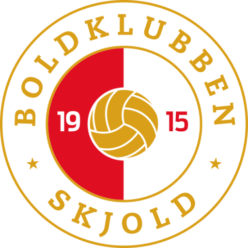

Fodbold for alle – i Danmarks største fodboldklub
Fra de mindste i Bold og Bevægelse til seniorer og motionister. Find dit hold, og kom med på banen i Fælledparken og Ryparken.

Ny i Skjold?
Alt det, forældre og nye medlemmer spørger om – samlet ét sted.
Find dit hold
Hold for drenge, piger, seniorer og motionister – fordelt på årgange og niveauer.
Se holdene → 📍Baner og træningstider
Vi træner primært i Fælledparken og Ryparken på Østerbro.
Se baner → 📝Bliv medlem
Sådan melder du dig ind, og hvad det koster.
Kom i gang → 🙌Bliv træner eller frivillig
Klubben drives af frivillige – mange er forældre.
Læs mere →Skjold i tal
Kilder: medlemstal fra DBU's medlemsopgørelse 2023 (3.508 medlemmer, gengivet af Frederiksberg Boldklub); stiftelsesdato fra klubbens vedtægter. Tallene skal bekræftes af klubben.
Nyheder
Klubbens seneste nyhed
Her vises nyheder fra klubbens eget nyhedssystem. Indholdet kunne ikke hentes til designforslaget.
Nyhed
Fx stævner, nye hold, sæsonstart eller kampreferater.
Nyhed
Nyhederne kan også hentes automatisk fra klubbens Facebook-side.
Bliv en del af fællesskabet
Skjold er en klub for hele Østerbro – med plads til både dem, der vil spille på højt niveau, og dem, der bare vil spille.
Bliv medlemVores samarbejdspartnere
Her vises sponsorernes logoer. Se sponsorsiden.